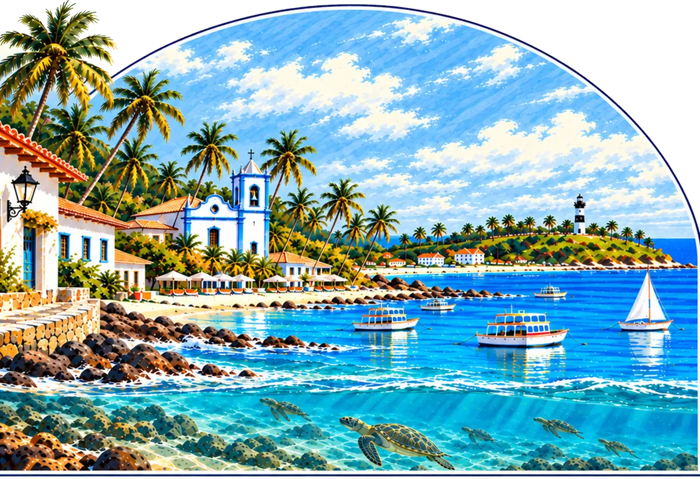

LOTEPFAspiração
Nelore Trento / Miguel Pinto – Nelore Jacuricy
PérolaFIV SausalitoLote Praia do Forte
Toque no animal
Landau da Di Genio
×
Kayak TE MafraEgípcia FIV MachadinhoBetina VI TE LRMS
- Média de 85 oócitos
apresenta
Nelore Jacuricy e Nelore Trento & Convidados
06 de novembro 19h
PRAIA DO FORTE / BAHIA

Toque no animal para assistir ao vídeo
Nelore Trento / Miguel Pinto – Nelore Jacuricy
Miguel Pinto – Nelore Jacuricy
Miguel Pinto – Nelore Jacuricy
Miguel Pinto – Nelore Jacuricy
Miguel Pinto – Nelore Jacuricy
Miguel Pinto – Nelore Jacuricy
Miguel Pinto – Nelore Jacuricy
Nelore Trento
Nelore Trento
Nelore Trento
Nelore Cascão
Nelore Arrocha o Nó
Nova Delhi Genética
Cássio Tottene – Nelore Serilon / Hiran Alencar / Gustavo Atayde / Pecuária 3JR
Nelore GR – Gustavo Rebucci / Nelore SR da Sara
Nelore São Pedro / RS Agropecuária / Nelore Gibertoni
Gustavo Rebucci – Nelore GR
Mundial Agropecuária
Edgar Candeias – Nelore Candeias / Nelore RFA – RFA Agropecuária
Lucente Agropecuária / Ourofino Genética Animal
Nelore GAM / Nelore HK / Lucente Agropecuária
Nelore Mara Móveis / Nelore J.Luz
Ourofino Agropecuária / Querência Agropecuária
Nelore Montana / Nelore São Pedro
Pasu Agropecuária / João Madson / Grupo Monte Verde
Nenhum lote encontrado para essa busca. Tente outro nome.
Dúvidas sobre os lotes ou cadastro para lances?
(62) 99811-9850 (abre em nova aba)06 de novembro, às 19h
Villa Global Education · Praia do Forte, Bahia
Transmissão Canal Rural · Lance Rural · Remate Web
À esquerda do “×” está o pai. À direita, a mãe, com o pai dela acima e a mãe dela abaixo.
Condições de pagamento e regras seguem o regulamento oficial do leilão.
Nelore Trento / Miguel Pinto – Nelore Jacuricy
Aspiração: Você leva uma aspiração da doadora: os oócitos coletados são fecundados com o touro que você escolher.
Miguel Pinto – Nelore Jacuricy
50% À venda: Você compra metade do animal e vira sócio do criador. Crias e embriões são divididos conforme o contrato.
Miguel Pinto – Nelore Jacuricy
50% À venda: Você compra metade do animal e vira sócio do criador. Crias e embriões são divididos conforme o contrato.
Miguel Pinto – Nelore Jacuricy
50% À venda: Você compra metade do animal e vira sócio do criador. Crias e embriões são divididos conforme o contrato.
Miguel Pinto – Nelore Jacuricy
50% À venda: Você compra metade do animal e vira sócio do criador. Crias e embriões são divididos conforme o contrato.
Miguel Pinto – Nelore Jacuricy
50% À venda: Você compra metade do animal e vira sócio do criador. Crias e embriões são divididos conforme o contrato.
Miguel Pinto – Nelore Jacuricy
Pacote duplo de aspiração: Uma aspiração de cada uma das duas doadoras do lote, em um só lance.
Nelore Trento
50% À venda: Você compra metade do animal e vira sócio do criador. Crias e embriões são divididos conforme o contrato.
Nelore Trento
50% À venda: Você compra metade do animal e vira sócio do criador. Crias e embriões são divididos conforme o contrato.
Nelore Trento
50% À venda: Você compra metade do animal e vira sócio do criador. Crias e embriões são divididos conforme o contrato.
Nelore Cascão
Animal: O animal é vendido por inteiro e vai para a sua fazenda.
Nelore Arrocha o Nó
50% À venda: Você compra metade do animal e vira sócio do criador. Crias e embriões são divididos conforme o contrato.
Nova Delhi Genética
Animal: O animal é vendido por inteiro e vai para a sua fazenda.
Cássio Tottene – Nelore Serilon / Hiran Alencar / Gustavo Atayde / Pecuária 3JR
Animal: O animal é vendido por inteiro e vai para a sua fazenda.
Nelore GR – Gustavo Rebucci / Nelore SR da Sara
Prenhez: Você leva uma gestação confirmada do acasalamento indicado, com previsão de parto.
Nelore São Pedro / RS Agropecuária / Nelore Gibertoni
Prenhez: Você leva uma gestação confirmada do acasalamento indicado, com previsão de parto.
Gustavo Rebucci – Nelore GR
Aspiração: Você leva uma aspiração da doadora: os oócitos coletados são fecundados com o touro que você escolher.
Mundial Agropecuária
Prenhez: Você leva uma gestação confirmada do acasalamento indicado, com previsão de parto.
Edgar Candeias – Nelore Candeias / Nelore RFA – RFA Agropecuária
Aspiração: Você leva uma aspiração da doadora: os oócitos coletados são fecundados com o touro que você escolher.
Lucente Agropecuária / Ourofino Genética Animal
Aspiração: Você leva uma aspiração da doadora: os oócitos coletados são fecundados com o touro que você escolher.
Nelore GAM / Nelore HK / Lucente Agropecuária
Aspiração: Você leva uma aspiração da doadora: os oócitos coletados são fecundados com o touro que você escolher.
Nelore Mara Móveis / Nelore J.Luz
Aspiração: Você leva uma aspiração da doadora: os oócitos coletados são fecundados com o touro que você escolher.
Ourofino Agropecuária / Querência Agropecuária
Prenhez: Você leva uma gestação confirmada do acasalamento indicado, com previsão de parto.
Nelore Montana / Nelore São Pedro
Pacote duplo de aspiração: Uma aspiração de cada uma das duas doadoras do lote, em um só lance.
Pasu Agropecuária / João Madson / Grupo Monte Verde
Aspiração: Você leva uma aspiração da doadora: os oócitos coletados são fecundados com o touro que você escolher.
Pérola
FIV Sausalito
Média de 85 oócitos
Eudora
da Mundial
Parida de fêmea desde 05/09, do Rima FIV Diego
Anita
FIV Jacuricy
Prenha do B5115 FIV da EAO
Parla
FIV Jacuricy
Prenha do Legat MJ
Califórnia
FIV Jacuricy
Boby HRO × Neve FIV Jacuricy
Raridade
FIV Jacuricy
Landau da Di Genio × Neve FIV Jacuricy
Livre escolha entre as duas bezerras
Pintura
FIV Jacuricy
Ganho de 1,490 kg/dia
Neve
FIV Jacuricy
Rima FIV Diego 4 × Mogiana FIV Jacuricy
Naomi
FIV Jacuricy
Donato de Navirai × Mogiana FIV Jacuricy
Média de oócitos: Naomi 110 · Neve 80
Antonella
FIV da Nova Delhi
Ganho de 1,405 kg/dia
Mogiana
FIV do Sozinho
Média de 80 oócitos
Dossier
FIV Volpe
Parida de macho do Athila de Naviraí
Melbourne
FIV Cascão
Ganho de 1,540 kg/dia
Izabella
FIV Arrocha o Nó
Ganho de 1,409 kg/dia
Chloe
FIV CBA
Parida de macho do Athila de Naviraí
Emppa
FIV 3JR
Prenha do Star FIV do Mura
Rheliquia
FIV SR da Sara
Acasalamento: Kayak TE Mafra
Parla
TN2 HVP
Acasalamento: Landau da Di Genio
Roma
Santa Irene
Alisha
FIV Ibaneis
Acasalamento: Bentley TE Bar
Guta
FIV da RFA
Apta para aspirar em 25/11/2026
Milagres
Ourofino
Última aspiração: 46 oócitos e 31 embriões com Kayak convencional
Loewe02
FIV 116/22 CBNEL
Média de 134 oócitos
Viatina-21
FIV Mara Móveis
Última aspiração: 56 oócitos e 19 embriões
Jupiá
TN1, TN2, TN3, TN5 e TN6 Ourofino
Acasalamento: Landau da Di Genio
Osaka
da RS
Kayak TE Mafra × Viatina TN J.Gal Paraná
Espannha
FIV NDF
Landau da Di Genio × Cattedral TN HVP
Média de oócitos: Osaka 48 · Espannha 44
Holambra2
FIV Monte Verde
Média de 106 oócitos e 29 embriões com sêmen sexado